Add predefined map styles
With map schemes, you can load predefined map styles to instantly change the appearance of the map view.
Load map schemes
The HERE SDK supports several preconfigured map schemes:
normalDay: A lossless scalable vector base map for usage during daylight.normalNight: A lossless scalable vector base map for usage during night.hybridDay: A day version hybrid map scheme combining satellite imagery with vector street network, map labels and POI information.hybridNight: A night version hybrid map scheme combining satellite imagery with vector street network, map labels and POI information.liteDay: A simplified day version of lite map schemenormalDay, featuring fewer map elements and limited color palette.liteNight: A simplified night version of lite map schemenormalNight, featuring fewer map elements and limited color palette.liteHybridDay: A simplified day version of lite hybrid map schemehybridDay, featuring fewer map elements and limited color palette.liteHybridNight: A simplified night version of lite hybrid map schemehybridNight, featuring fewer map elements and limited color palette.satellite: A bitmap based map showing satellite imagery for various zoom stages.logisticsDay: A day version map scheme with focus on fleet management content. It also enables certain POI icons to indicate, for example, truck parking or truck wash. These icons are pickable.logisticsNight: A night version of thelogisticsDaymap scheme.logisticsHybridDay: A day version logistics hybrid map scheme catering to the needs of dispatchers, fleet managers and delivery drivers, highlighting and featuring map elements relevant to logistics use cases.logisticsHybridNight: A night version of thelogisticsHybridDaymap scheme.roadNetworkDay: A day version of a scheme which highlights roads without showing other content such as labels or buildings. It is designed for usage as an additional zoomed-in mini-maps display to help drivers to orientate during navigation and to focus on the maneuver arrows which can be highlighted on top of this map scheme.roadNetworkNight: A night version of theroadNetworkDaymap scheme.topoDay: A day version map scheme highlighting geographic features such as elevation, landforms and natural landscapes to provide a clear representation of the terrain.topoNight: A night version of thetopoDaymap scheme.
Note that it is also possible to fully customize your own map styles, except for the satellite imagery.
Use the following code snippet to load a map scheme:
MapScheme mapScheme = MapScheme.normalDay;
_hereMapController.mapScene.loadSceneForMapScheme(mapScheme,
(MapError? error) {
if (error != null) {
print('Map scene not loaded. MapError: ${error.toString()}');
return;
}
// ...
});
It is recommended to use the day variants during day time when the surrounding light is brighter. The night variants are optimized for usage when there is less light. For example, an application may switch from day to night scheme when a driver is passing through a tunnel - if you are using the Navigate Edition, you can get notified on changed road attributes to know when you are driving through a tunnel. This allows an application to switch the map scheme on the fly. Note that this is not happening automatically.
The HERE SDK is also not automatically detecting the current time of the day to switch between day and night modes. An application may decide to do this based on the user's configuration or by checking the device clock.
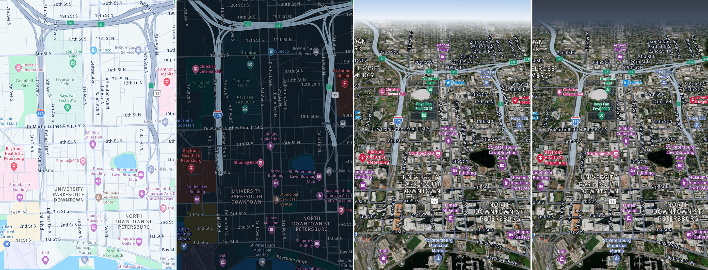
The available map styles are optimized to easily add additional content and overlays onto the base map without visual interference. The map schemes are less colorful and support a clean and neutral tone to maximize readability even in case of color blindness:
- The street network is designed in gray scales and provides a hierarchy through brightness, contrast and widths.
- Colors are overall rather bright set up.
- Key colors are grey, blue, green, white.
The HERE SDK also has lite map schemes which features fewer map elements and a more limited color palette. See below:
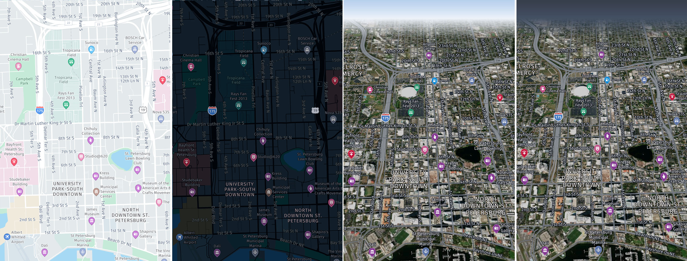
In addition, the HERE SDK offers a logistics map scheme that focuses more on fleet management content.

The HERE SDK also has a satellite scheme, that does not contain any labels.
The HERE SDK offers a map scheme that highlights roads without showing other content such as labels or buildings.
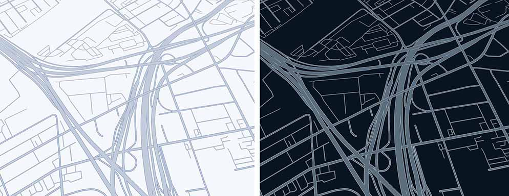
The HERE SDK offers a map scheme that highlights geographic features such as elevation, landforms and natural landscapes.
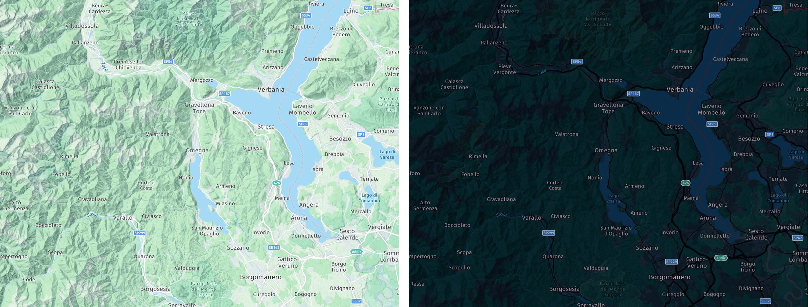
Add map features
On top of map schemes, the HERE SDK allows to add certain kinds of layers - we call them "map features" - that show additional information such as the current traffic flow.
Note
Note that not all feature layers are available for all editions. Take a look at the API Reference to know which layers are supported for your edition.
Adding a layer may have a minimal performance impact on lower-end devices.
Below you can see how the map feature layers can be enabled:
_hereMapController.mapScene.enableFeatures({MapFeatures.buildingFootprints: MapFeatureModes.buildingFootprintsAll});
_hereMapController.mapScene.enableFeatures({MapFeatures.contours: MapFeatureModes.contoursAll});
_hereMapController.mapScene.enableFeatures({MapFeatures.congestionZones: MapFeatureModes.congestionZonesAll});
_hereMapController.mapScene.enableFeatures({MapFeatures.environmentalZones: MapFeatureModes.environmentalZonesAll});
_hereMapController.mapScene.enableFeatures({MapFeatures.extrudedBuildings: MapFeatureModes.defaultMode});
_hereMapController.mapScene.enableFeatures({MapFeatures.landmarks: MapFeatureModes.landmarksTextured});
_hereMapController.mapScene.enableFeatures({MapFeatures.roadExitLabels: MapFeatureModes.roadExitLabelsAll});
_hereMapController.mapScene.enableFeatures({MapFeatures.safetyCameras: MapFeatureModes.defaultMode});
_hereMapController.mapScene.enableFeatures({MapFeatures.shadows: MapFeatureModes.shadowsAll});
_hereMapController.mapScene.enableFeatures({MapFeatures.terrain: MapFeatureModes.defaultMode});
_hereMapController.mapScene.enableFeatures({MapFeatures.trafficFlow: MapFeatureModes.defaultMode});
_hereMapController.mapScene.enableFeatures({MapFeatures.trafficIncidents: MapFeatureModes.defaultMode});
_hereMapController.mapScene.enableFeatures({MapFeatures.lowSpeedZones: MapFeatureModes.lowSpeedZonesAll});
_hereMapController.mapScene.enableFeatures({MapFeatures.vehicleRestrictions: MapFeatureModes.defaultMode});
_hereMapController.mapScene.enableFeatures({MapFeatures.ambientOcclusion: MapFeatureModes.ambientOcclusionAll});
Similarly, you can also disable a list of layers like shown below:
_hereMapController.mapScene.disableFeatures([MapFeatures.buildingFootprints, MapFeatures.extrudedBuildings, MapFeatures.ambientOcclusion]);
Note
When trafficFlow and trafficIncidents features are enabled, then the HERE SDK will request new traffic information for each new vector tile. This may lead to an increase of costs, depending on your plan. With MapContentSettings the traffic flow and incident refresh period can be adjusted.
Each map feature supports one or more alternative rendering options. For example, instead of using terrainHillshade, which is the default mode for terrain, you can use terrain3d to show advanced topographical shading for hills on a true 3D terrain map view.
Below you can see screenshots for all map layers supported by the HERE SDK - note that not all feature layers are available for all editions:
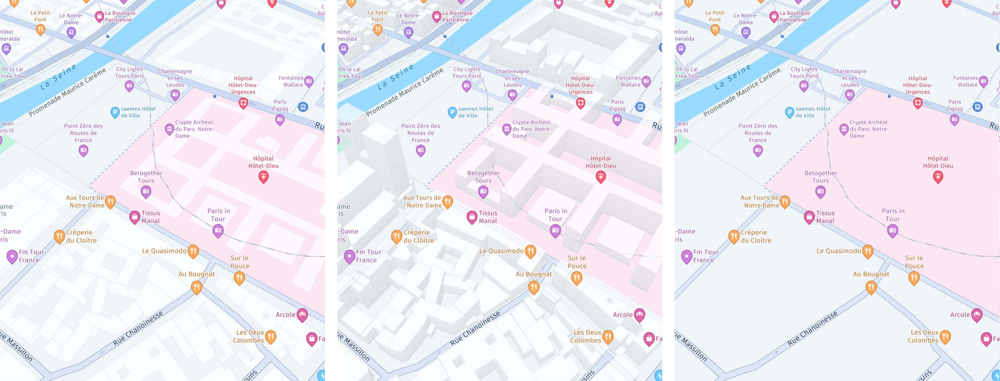
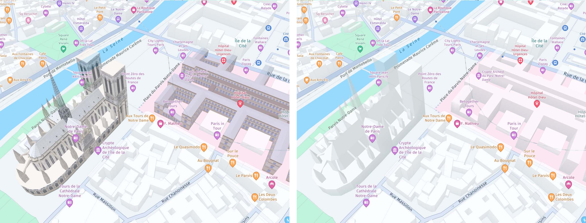
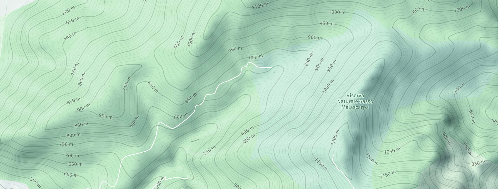
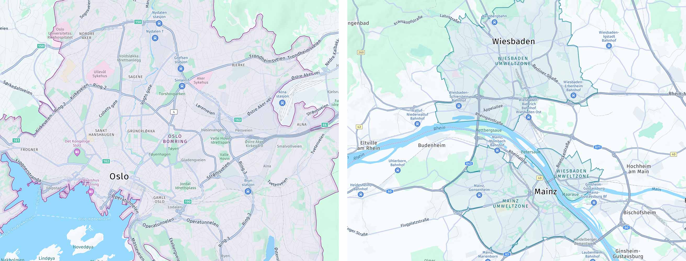
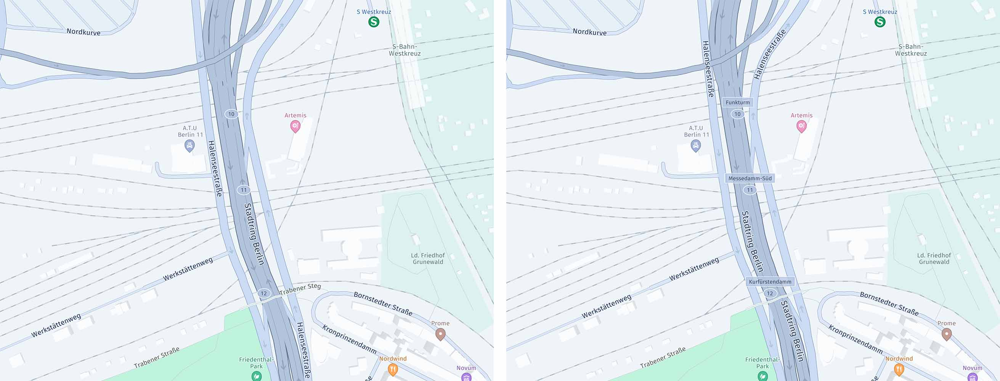
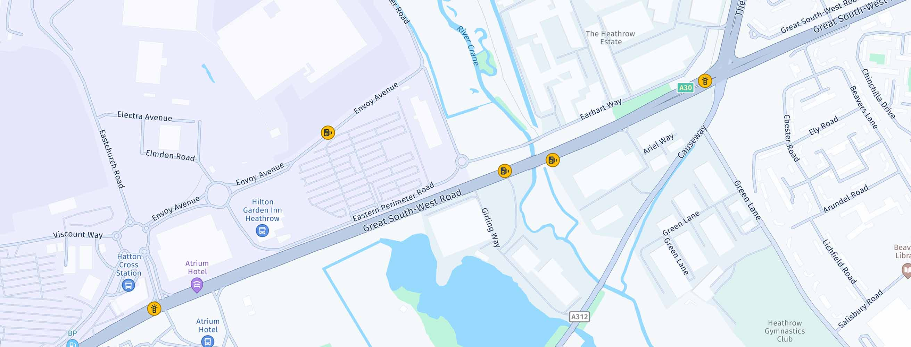
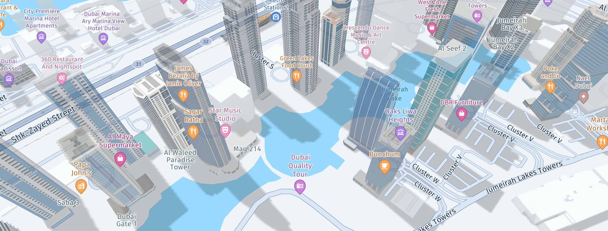
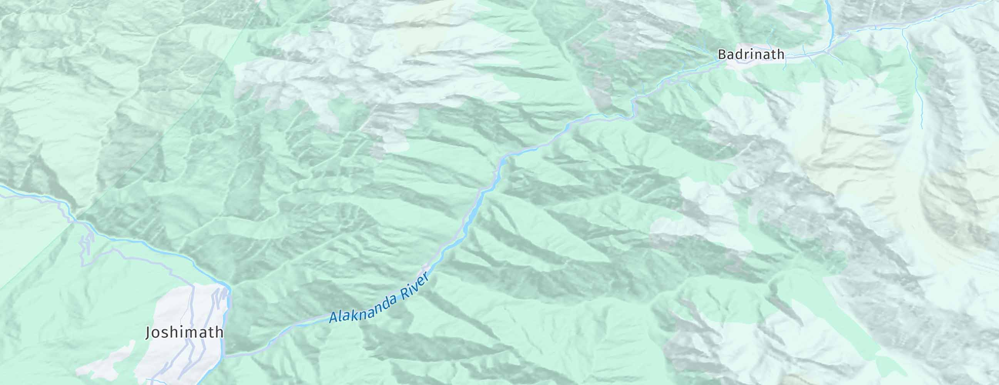
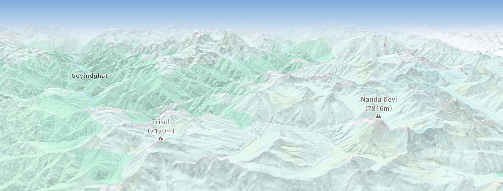
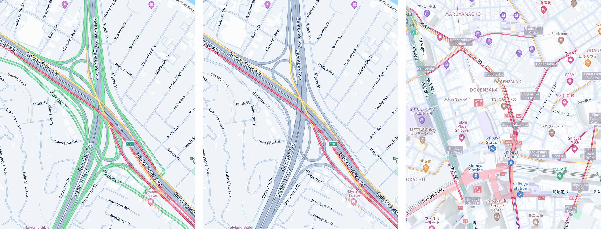
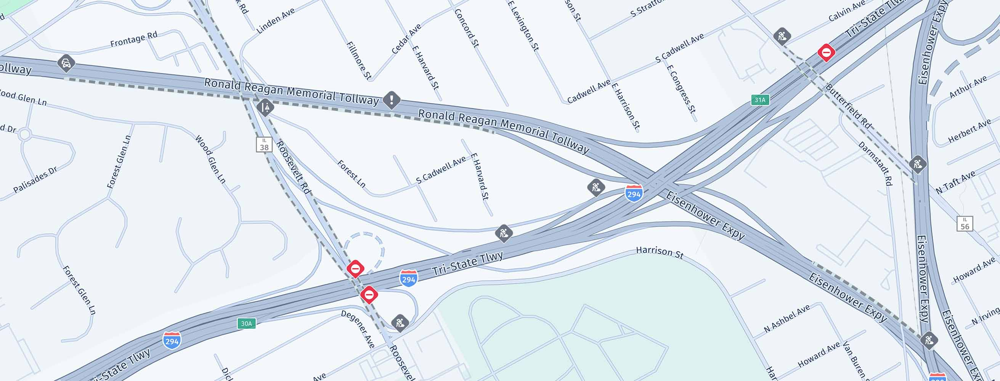
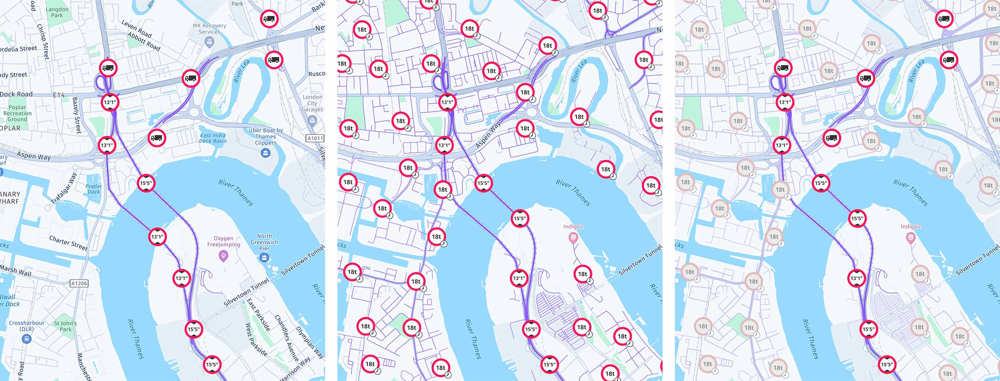
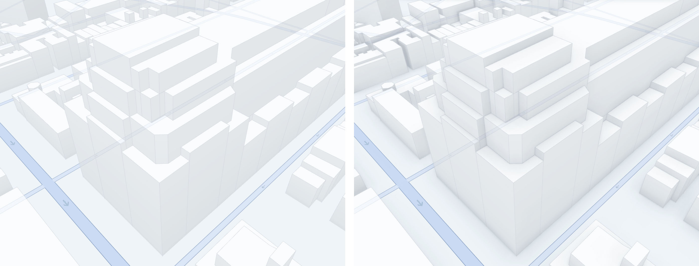
Some layers allow to filter the shown content via MapContentSettings:
MapFeatures.trafficIncidents: UsefilterTrafficIncidents(List<TrafficIncidentType> trafficIncidents)to filter the displayed traffic incidents.MapFeatures.vehicleRestrictions: UsefilterVehicleRestrictions(TruckSpecifications truckSpecifications, List<HazardousMaterial> hazardousMaterials, TunnelCategory tunnelCategory)to filter the displayed truck restrictions.
The map layers buildingFootprints & extrudedBuildings are enabled by default on the MapView.
Beta Release: we now also support MapFeatureModes.terrain3d with day, night, hybrid day and hybrid night map schemes.

Extruded buildings coverage
When the MapFeatures.extrudedBuildings feature is enabled, buildings will be rendered in 3D with an outline. The appearance of the buildings may vary by country. For example, in Japan, the outlines are combined sometimes with colored building walls.
By default, extruded buildings are supported for most countries.
Note that the enriched Japan map requires a separate contract with HERE.
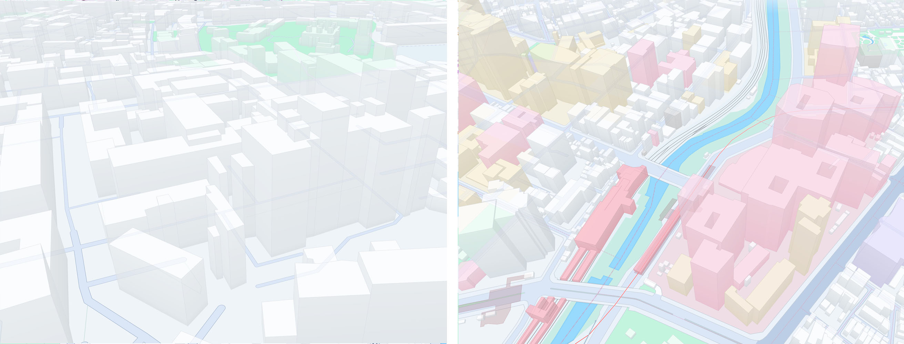
Available customizations
The HERE SDK supports the customization of predefined map styles through the Style class. All MapScheme styles are supported.
Note
This is a beta release of this feature, so there could be a few bugs and unexpected behavior. Related APIs may change for new releases without a deprecation process.
String myStyleCustomization = """
{
"definitions": {
"General.Labels.Scale.Factor": 1.5
}
}
""";
Style styleUpdate = JsonStyleFactory.createFromString(myStyleCustomization);
mapView.hereMap.style.update(styleUpdate);
The following style customizations are supported for predefined map styles:
General.Labels.Scale.Factor: a factor used to scale map labels (icons and text). The default value is 1. Values less than 1 would down-scale map labels and values larger than 1 would up-scale map labels. Values less than 0 or very large values are not supported and lead to undefined behavior. Anullvalue restores the default.
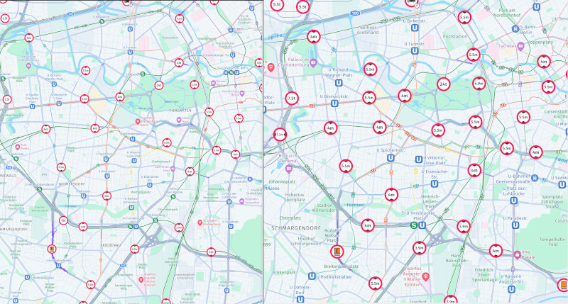